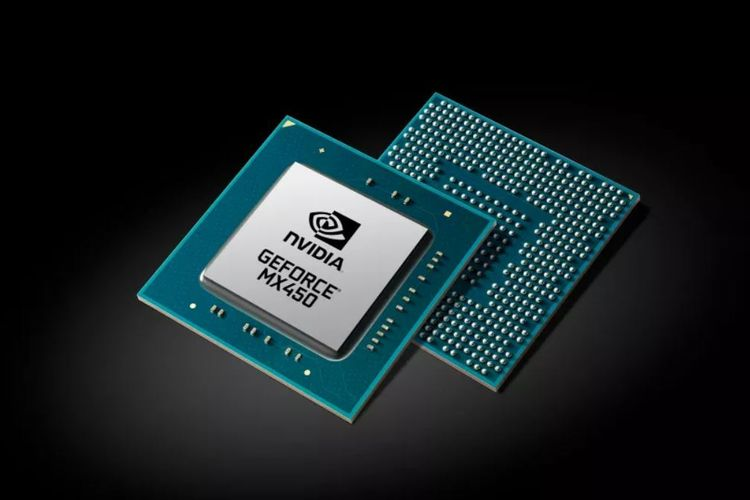

Nvidia Umumkan GPU Laptop GeForce MX450
KOMPAS.com - Nvidia pekan ini mengumumkan chip pengolah grafis ( GPU) baru untuk laptop, GeForce MX450. GPU yang ditujukan untuk produk laptop tipis ini merupakan suksesor dari Nvidia GeForce MX350 yang dirilis Februari lalu. Meski tergolong GPU entry level, GeFOrce MX450 dibekali dengan dukungan interface PCI Express (PCIe) 4.0 dan memori grafis jenis GDDR6 sehingga diklaim dapat memberikan peningkatan kinerja gaming, serta editing foto dan video.